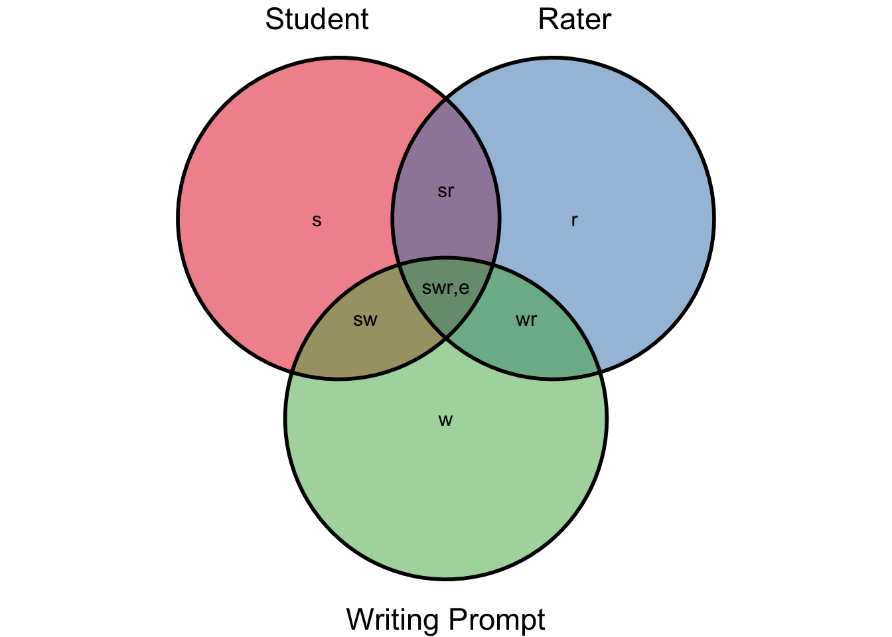
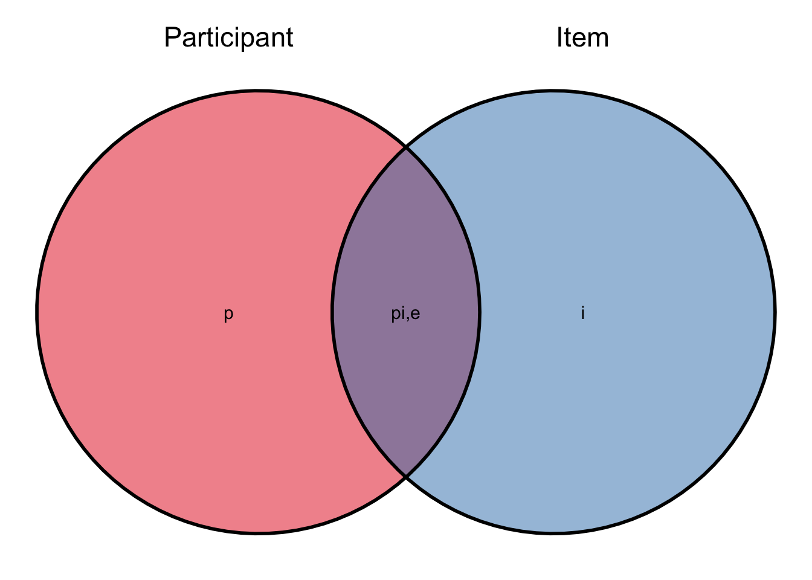
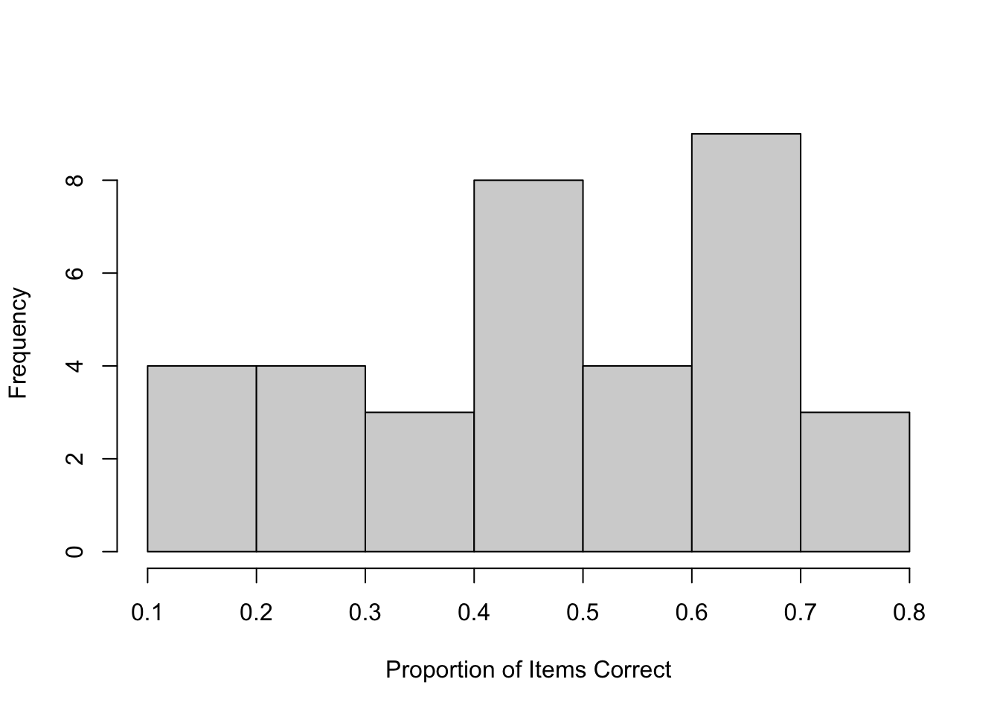
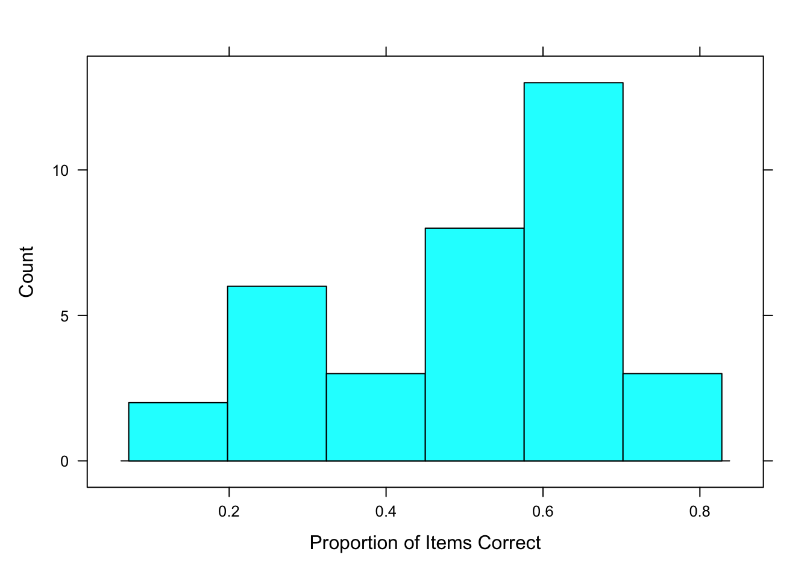
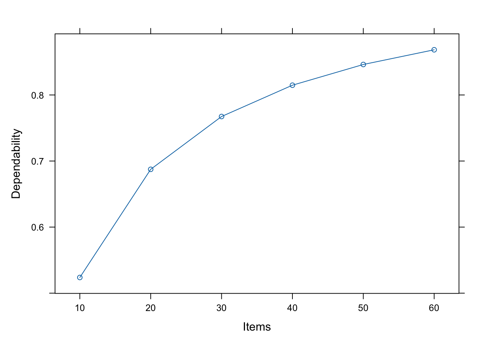

4 Generalizability Theory
Generalizability theory, or G theory, integrates classic test theory (CTT) and analysis of variance (ANOVA). In essence, ANOVA is used to decompose the single error component in CTT into multiple components in G theory. Recall the equations for the observed scores (Equation 4.1) and its variance (Equation 4.2) from CTT.
\[ X = T + E, \tag{4.1}\] and,
\[ \sigma^2_x = \sigma^2_T + \sigma^2_E \tag{4.2}\]
which state that the observed score \(X\) is a function of the true score \(T\) plus some random error \(E\), and that the variance of the observed score \(\sigma^2_X\) is a function of the true score variance \(\sigma^2_T\) plus the variance of the error \(\sigma^2_E\). In this model all the error is capture in a single term which has a population mean of \(E\) and a population variance of \(\sigma^2_E\). There is no mechanism in CTT to differentiate the various potential types of error.
A hypothetical example used by (Brennan 2010; and similar to one used by Desjardins and Bulut 2018), concerns the desire of a testing company to develop a writing proficiency test, which consists of students completing several writing prompts that are scored by multiple raters. We might expect that variability in the observed scores on this test could be due not only to variability in the writing proficiency across students, may also reflect varying difficulty across writing prompts as well and variability in how different raters may score similar performance across students on a particular prompt. CTT would lump all these sources into one error term, while a properly designed study combined with G theory may be able to separately estimate these sources.
4.0.1 Multiple Sources of Error
Generalizability theory acknowledges that multiple sources of error can impact scores simultaneously, and allow for estimating the effects of each (Raykov and Marcoulides 2011). These various sources of error are referred to as facets (e.g., items, raters, measurement occasions). All measurements of behavior are conceptualized as being sampled from a universe of admissible observations (Raykov and Marcoulides 2011). If the observed score is expected to vary across a facet (e.g. vary across occasions, or vary depending on the items included, or the rater scoring), then that facet is a defining characteristic of the universe. The idea of reliability is replace with the idea of generalizability, which, instead of asking how accurately observed scores can reflect the true score (as in CTT), generalizability theory asks how accurately observed scores allow us to generalize about behavior of an individual in a particular universe.
\[ X_{swr} = \mu + \nu^s + \nu_w + \nu_r + \nu_{sw} + \nu_{sr} + \nu_{wr} + \nu_{swr,e} \tag{4.3}\]
\[ \sigma^2(X_{swr})= \sigma^2_s + \sigma^2_w + \sigma^2_r + \sigma^2_{sw} + \sigma^2_{sr} + \sigma^2_{wr} + \sigma^2_{swr,e} \tag{4.4}\]
In Equation 4.3, \(\mu\) is the mean population and universe score which is the G theory equivalent of the true score in CTT (Brennan 2010). The \(\nu\) (pronounced “new”) components are the uncorrelated effect of the sub-scripted measurement unit (e.g. participants) or facet (e.g. item, raters, etc.).
Equation 4.4 describes how the total variance of observed scores, \(\sigma^2(X_{swr})\), can be decomposed into several independent variances. Figure 4.1 is a graphical representation of the variance components, with the total variance in observed score represented by the three overlapping circles, and each component in Equation 4.4 labeled in the figure. These components represent the student, rater, and writing prompts, along with their interaction.

Important concepts in G theory include the universe of admissible observation and the related G study; and the universes of generalization and the related D (or decision) study (Brennan 2010). It is helpful to note that the term
4.1 One-Facet Design
To start with we will consider a simple design taken from chapter 3 of Desjardins and Bulut (2018), in which 30 participants were administered an executive functioning (EF) instrument, consisting of 10 dichotomously scored items (scored 0, or 1). In addition to the variation across participants, this design has one facet, which is item. In all there are three sources of variance in EF scores, one source due to participant (\(\sigma^2_p\)), one source due to items (\(\sigma^2_i\)) and one source the interaction of the two, which is also confounded with the residual of the model (\(\sigma^2_{pi,e}\)). These are represented in ?eq-efvar, and graphically displayed in Figure 4.2.
\[ \sigma^2(X_{pi})= \sigma^2_p + \sigma^2_i + \sigma^2_{pi,e} \tag{4.5}\]

First, load the hypothetical data for this example from the hemp package.
library(hemp)
library(psych) # for descriptives and the headTail function
data("efData") # from hemp packageThee we can look at the data as follows:
str(efData)'data.frame': 350 obs. of 3 variables:
$ Items : int 1 1 1 1 1 1 1 1 1 1 ...
$ Score : int 0 1 1 1 1 1 1 1 1 1 ...
$ Participants: int 1 2 3 4 5 6 7 8 9 10 ...
- attr(*, "reshapeLong")=List of 4
..$ varying:List of 1
.. ..$ score: chr [1:10] "item.1" "item.2" "item.3" "item.4" ...
.. ..- attr(*, "v.names")= chr "score"
.. ..- attr(*, "times")= int [1:10] 1 2 3 4 5 6 7 8 9 10
..$ v.names: chr "score"
..$ idvar : chr "participant"
..$ timevar: chr "item"headTail(efData) Items Score Participants
1.1 1 0 1
2.1 1 1 2
3.1 1 1 3
4.1 1 1 4
... ... ... ...
32.10 10 0 32
33.10 10 1 33
34.10 10 0 34
35.10 10 0 35We can see that this is a balanced design by tallying the number of items per participant.
aggregate(Items ~ Participants , data = efData, length) Participants Items
1 1 10
2 2 10
3 3 10
4 4 10
5 5 10
6 6 10
7 7 10
8 8 10
9 9 10
10 10 10
11 11 10
12 12 10
13 13 10
14 14 10
15 15 10
16 16 10
17 17 10
18 18 10
19 19 10
20 20 10
21 21 10
22 22 10
23 23 10
24 24 10
25 25 10
26 26 10
27 27 10
28 28 10
29 29 10
30 30 10
31 31 10
32 32 10
33 33 10
34 34 10
35 35 104.1.1 G Study
A G study can be conducted to estimate the three variance components. This is done using the lme4 package in R, which is automatically loaded when you load the hemp package (but could be loaded otherwise with library(lme4)). This package was developed to estimate linear mixed effects models. You can learn more about this package type ?lme4 in the R console and to learn more about the function used below type ?lmer. Briefly, the lmer function allows inclusion of fixed effects, like those included in standard regression models and most ANOVA models, along with random effects as done here. The random effects are each contained in a set of parentheses in the formula argument (e.g. (1 | Participant) and (1 | Items) below). We estimate a model and name it one_facet_model which estimates the scores on the EF instrument with two random effects, one for participant and one for items. Then we perform a G study with the gstudy() function from the hemp package and loo at the estimates of the three variance components.
one_facet_model <- lmer(Score ~ (1 | Participants) + (1 | Items),
data = efData)
one_facet_gstudy <- gstudy(one_facet_model)
one_facet_gstudy Source Est.Variance Percent.Variance
1 Participants 0.0258 9.9%
2 Items 0.0959 36.8%
3 Residual 0.1387 53.3%A nice feature of the gstudy() function is the proportion of variances given in the output. We see that about 37% of the variance in EF scores are estimated to be due to the items, while only about 10% is due to differences across participants. These variances represent the magnitude of the error in generalizing from a participants score on a specific item of the EF instrument to that participants universe score. These components do not tell us the variance in generalizing based on an instrument with 10 items. To get that estimate we can do a D study and set the test length to 10 (see below). Note that the large residual error of 53% represents both the participant by item interaction and random error. We are unable to distinguish between these two sources of error.
participant_means <- aggregate(Score ~ Participants, data = efData, mean)
colnames(participant_means) <- c("Participant", "Mean")
hist(participant_means$Mean, xlab = "Proportion of Items Correct",
main = "", breaks= 7)
lattice::histogram(participant_means$Mean, type = "count",
xlab = "Proportion of Items Correct")
item_means <- aggregate(Score ~ Items, efData, mean)
colnames(item_means) <- c("Item", "Mean")
item_means Item Mean
1 1 0.94285714
2 2 0.68571429
3 3 0.68571429
4 4 0.08571429
5 5 0.74285714
6 6 0.77142857
7 7 0.08571429
8 8 0.60000000
9 9 0.45714286
10 10 0.114285714.1.2 D Study
One purpose of a D study is to explore how manipulating the facets might impact the reliability of the instrument as a whole in the relevant context. For example, we mentioned above that the G study does not give us information about our instrument as a whole. If we want to estimate the reliability of this instrument with 10 items, which is what was done in this hypothetical study we could do the following:
one_facet_dstudy <- dstudy(one_facet_gstudy, unit = "Participants", n = c("Items" = 10))
one_facet_dstudy Source Est.Variance N Ratio of Var:N
1 Participants 0.0258 350 0.02580
2 Items 0.0959 10 0.00959
3 Residual 0.1387 10 0.01387
The generalizability coefficient is: 0.6503655.
The dependability coefficient is: 0.5237515.The output of the D study contains three types of information. First, the estimated variances of each source of variance (e.g. Participant, Item, and Residual) are given. Second, the generalizability coefficient, which is analogous to the reliability coefficient in CTT is given. Here is is estimated at .65, which is fairly low.
We might also want to determine what impact the number of items has on the reliability of the instrument. That way we can estimate the impact of adding more items.
dstudy_plot(one_facet_gstudy, unit = "Participants",
facets = list(Items = c(10, 20, 30, 40, 50, 60)),
g_coef = FALSE)
4.2 Two-Facet Crossed Design
4.3 Additional Readings
For more information of G theory, see Raykov and Marcoulides (2011). For an example using the R package lavaan with G theory, see Jorgensen (2021).